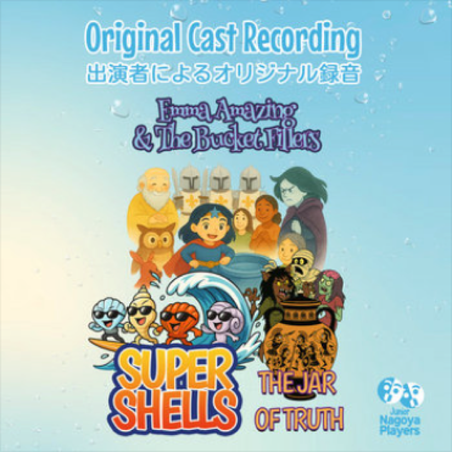
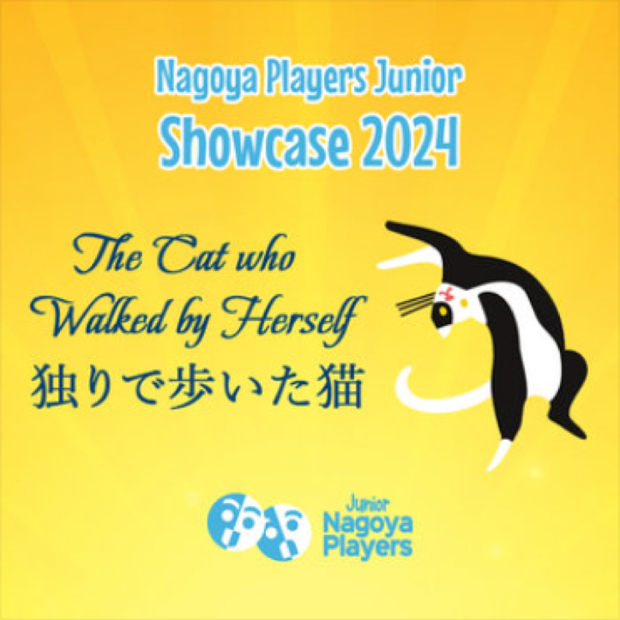
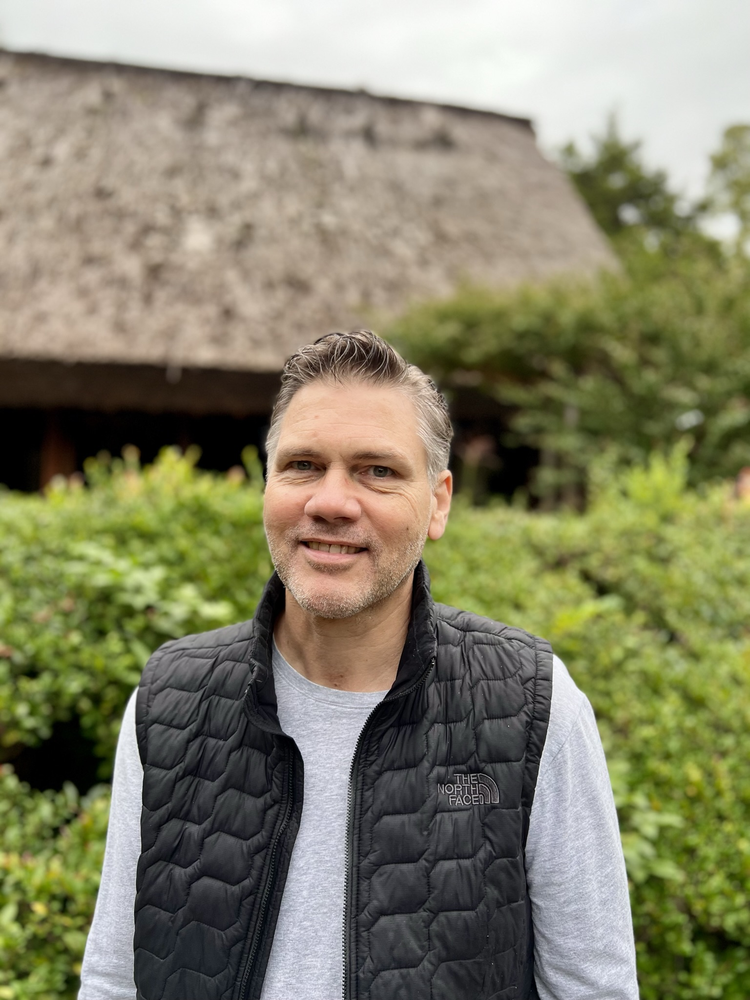

Animation in development
Featured song · 2026
Big Blue Bucket
An animated presentation of the original cast recording from Emma Amazing & the Bucket Fillers.
The finished video will appear here with playback controls and captions.
Composer · Lyricist · Musical Director
Songs and soundscapes for the stage, shaped through colour, emotion and vibe — and open to whatever genre the story calls for.
Explore the productions

Across genres
Across borders
Always for the story
01
Selected work
A growing chronological archive of productions, songs, people and recordings.
02
Listen
Recordings are grouped by what they are — finished cast recordings, or working documents from the creative process.
Featured song · 2026
An animated presentation of the original cast recording from Emma Amazing & the Bucket Fillers.
The finished video will appear here with playback controls and captions.
Performances recorded with the casts who brought the shows to life.
Working recordings and surviving music from staged productions.
The public albums are one part of a wider body of work.
03 · About
Ben Dorman is an Australian composer and lyricist based in Japan and available for collaborations anywhere. He creates songs and soundscapes for the stage. He begins by asking collaborators about colours, feelings and vibes, then finds the musical language the story needs — moving freely across genres rather than bringing the same sound to every project.
His own relationship with musical theatre began at school, performing in Guys and Dolls, Annie Get Your Gun, and original productions with music and song. Those experiences shaped a deeply personal, performer-first approach to composition.

“I aim to reach the heart of just one performer first. I want music and song to carry young performers into a magical world—and for their families to share the joy of seeing that happen. I hope the experience stays with them far beyond the stage.”